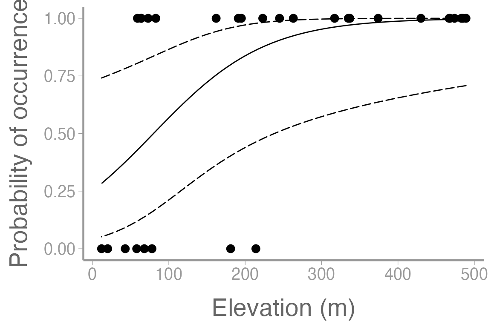
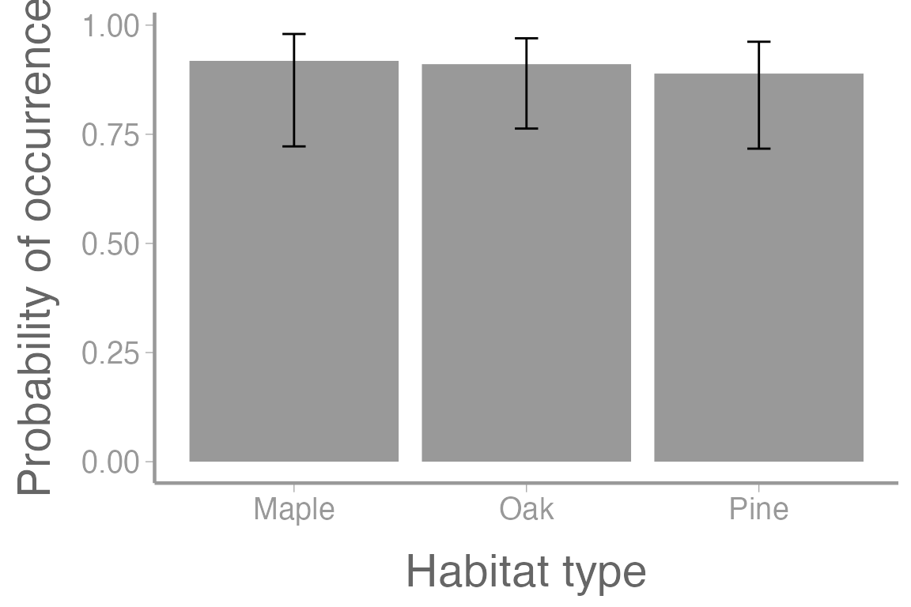
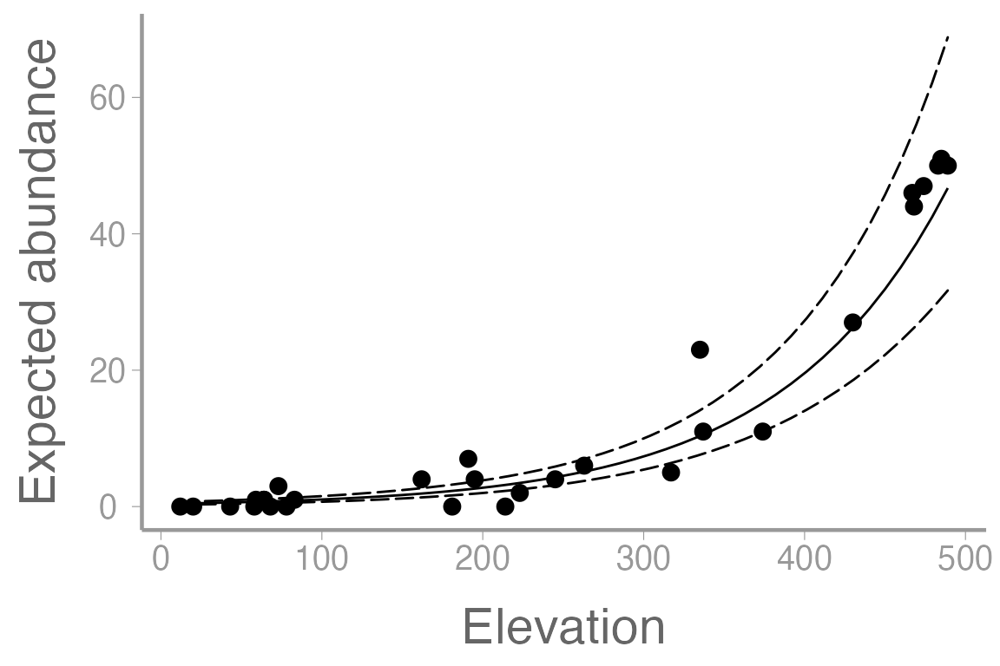

lab14_glm.RmdRemember from lecture the logistic regression model:
\[\Large logit(p_i) = \beta_0 + \beta_1x_{i1} + \beta_2x_{i2} + · · ·\]
\[\Large y_i \sim binomial(N, p_i)\] where:
\(N\) is the number of ‘trials’ (e.g. coin flips)
\(p_i\) is the probability of a success for sample unit \(i\)
| presence | abundance | elevation | habitat |
|---|---|---|---|
| 0 | 0 | 58 | Oak |
| 1 | 7 | 191 | Oak |
| 0 | 0 | 43 | Oak |
| 1 | 11 | 374 | Oak |
| 1 | 11 | 337 | Oak |
| 1 | 1 | 64 | Oak |
Let’s start by using the glm() function to model the
relationship between frog detections (0 = not detected, 1 = detected),
habitat, and elevation:
fm1 <- glm(presence ~ habitat + elevation, family = binomial(link = "logit"), data = frogData)
summary(fm1)
#>
#> Call:
#> glm(formula = presence ~ habitat + elevation, family = binomial(link = "logit"),
#> data = frogData)
#>
#> Deviance Residuals:
#> Min 1Q Median 3Q Max
#> -1.884 -0.617 0.167 0.605 1.377
#>
#> Coefficients:
#> Estimate Std. Error z value Pr(>|z|)
#> (Intercept) -0.99598 1.21698 -0.82 0.413
#> habitatOak -0.09678 1.36752 -0.07 0.944
#> habitatPine -0.33722 1.38157 -0.24 0.807
#> elevation 0.01366 0.00601 2.27 0.023 *
#> ---
#> Signif. codes: 0 '***' 0.001 '**' 0.01 '*' 0.05 '.' 0.1 ' ' 1
#>
#> (Dispersion parameter for binomial family taken to be 1)
#>
#> Null deviance: 34.795 on 29 degrees of freedom
#> Residual deviance: 23.132 on 26 degrees of freedom
#> AIC: 31.13
#>
#> Number of Fisher Scoring iterations: 6Notice that we use the family = argument to tell
R that this is a logistic (i.e., binomial) glm with a logit
link function.
What do the parameter estimates from this model represent, including the intercept? What can we say about the effects of habitat and elevation on the probability of detecting a frog?
Use the model.matrix() function to examine the dummy
variable structure and contrasts.
As we have seen previously, we can use predict() to
estimate occurrence probability at different combinations of elevation
and habitat. For example, how does probability of occurrence differ
across elevations in oak habitat:
predData.elev <- data.frame(elevation = seq(12, 489, length = 50),habitat = "Oak")
head(predData.elev)| elevation | habitat |
|---|---|
| 12.00 | Oak |
| 21.73 | Oak |
| 31.47 | Oak |
| 41.20 | Oak |
| 50.94 | Oak |
| 60.67 | Oak |
By default, the predictions are on the link scale so to get
confidence intervals on the probability scale, we have to back transform
using the inverse-link (plogis()):
pred.link <- predict(fm1, newdata = predData.elev, se.fit = TRUE)
predData.elev$p <- plogis(pred.link$fit) # back transform to probability scale
predData.elev$lower <- plogis(pred.link$fit - 1.96 * pred.link$se.fit)
predData.elev$upper <- plogis(pred.link$fit + 1.96 * pred.link$se.fit)And now plot the predictions and observations:
library(ggplot2)
ggplot() +
geom_point(data = frogData, aes(x = elevation, y = presence)) +
geom_path(data = predData.elev, aes(x = elevation, y = p)) +
geom_ribbon(data = predData.elev, aes(x = elevation, ymin = lower, ymax = upper),
fill = NA, color = "black", linetype = "longdash") +
scale_y_continuous("Probability of occurrence") +
scale_x_continuous("Elevation (m)")
What about occurrence probability in each habitat type:
predData.hab <- data.frame(habitat = c("Oak", "Maple", "Pine"), elevation = 250)
pred.hab <- predict(fm1, newdata = predData.hab, se.fit = TRUE)
predData.hab$p <- plogis(pred.hab$fit) # back transform to probability scale
predData.hab$lower <- plogis(pred.hab$fit - pred.hab$se.fit)
predData.hab$upper <- plogis(pred.hab$fit + pred.hab$se.fit)
ggplot() +
geom_col(data = predData.hab, aes(x = habitat, y = p), fill = "grey60") +
geom_errorbar(data = predData.hab, aes(x = habitat, ymin = lower, ymax = upper),
width = 0.1) +
scale_y_continuous("Probability of occurrence") +
scale_x_discrete("Habitat type")
Remember from lecture that the model for the Poisson regression is:
\[\Large log(\lambda_i) = \beta_0 + \beta_1x_{i1} + \beta_2x_{i2} + · · ·\] \[\Large y_i \sim Poisson(\lambda_i)\]
where:
In the linear regression model we saw in previous weeks, we had a variance term \(sigma^2\) that measured on far, on average, each response was from it’s expected value. But neither of the two generalized linear models we learned about here have an equivalent variance term. Why is that?
Using the frog data, let’s model the number of frogs detected at each point as a function of habitat and elevation:
fm2 <- glm(abundance ~ habitat + elevation, family = poisson(link = "log"), data = frogData)
summary(fm2)
#>
#> Call:
#> glm(formula = abundance ~ habitat + elevation, family = poisson(link = "log"),
#> data = frogData)
#>
#> Deviance Residuals:
#> Min 1Q Median 3Q Max
#> -2.631 -1.081 -0.107 0.335 2.793
#>
#> Coefficients:
#> Estimate Std. Error z value Pr(>|z|)
#> (Intercept) -0.786953 0.294117 -2.68 0.0075 **
#> habitatOak -0.153392 0.197101 -0.78 0.4364
#> habitatPine -0.065281 0.110385 -0.59 0.5543
#> elevation 0.009784 0.000629 15.55 <2e-16 ***
#> ---
#> Signif. codes: 0 '***' 0.001 '**' 0.01 '*' 0.05 '.' 0.1 ' ' 1
#>
#> (Dispersion parameter for poisson family taken to be 1)
#>
#> Null deviance: 700.762 on 29 degrees of freedom
#> Residual deviance: 44.891 on 26 degrees of freedom
#> AIC: 140.1
#>
#> Number of Fisher Scoring iterations: 5Again, be sure you can interpret the parameters in this model, including the intercept.
To get confidence intervals on the \((0,
\infty)\) scale, predict on the log (link) scale and then back
transform using the inverse-link (exp()):
pred.link <- predict(fm2, newdata = predData.elev, se.fit = TRUE)
predData.elev$lambda <- exp(pred.link$fit) # exp is the inverse-link function
predData.elev$lower <- exp(pred.link$fit - 1.96 * pred.link$se.fit)
predData.elev$upper <- exp(pred.link$fit + 1.96 * pred.link$se.fit)
ggplot() +
geom_point(data = frogData, aes(x = elevation, y = abundance)) +
geom_path(data = predData.elev, aes(x = elevation, y = lambda)) +
geom_ribbon(data = predData.elev, aes(x = elevation, ymin = lower, ymax = upper),
fill = NA, color = "black", linetype = "longdash") +
scale_x_continuous("Elevation") +
scale_y_continuous("Expected abundance")
Researchers want to know how latitude and landscape type influence the probability that American Crows are infected by West Nile Virus. One hundred crows are captured and tested for West Nile Virus in urban and rural landscapes spanning a latitude gradient.
The data can be loaded using:
Create an R markdown report to do the following:
Fit a logistic regression model to the crow data to assess the effects of latitude and landscape type
Include a well-formatted summary table of the parameter estimates
Provide a clear interpretation of the parameter estimates in the text
Plot the relationship between infection probability and latitude, for rural and urban landscapes, on the same graph. The graph should include:
the observed data points (color coded by landscape)
a legend
confidence intervals
You may format the report however you like but it should be well-organized, with relevant headers, plain text, and the elements described above.
As always:
Be sure the output type is set to:
output: html_document
Title the document:
title: "Lab 14 optional assignment"
Be sure to include your first and last name in the
author section
Be sure to set echo = TRUE in all R
chunks so we can see both your code and the output
See the R Markdown reference sheet for help with creating
R chunks, equations, tables, etc.
See the “Creating publication-quality graphics” reference sheet for tips on formatting figures